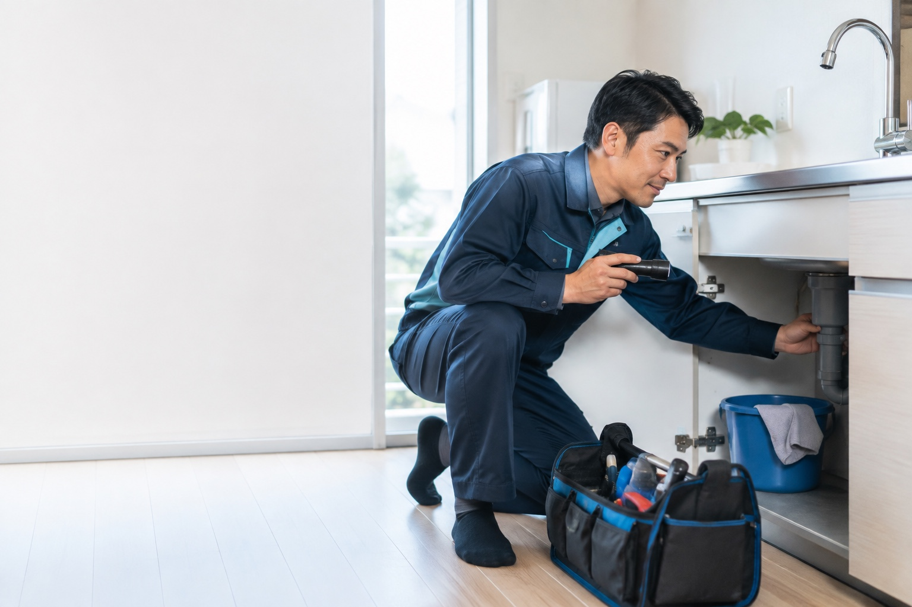
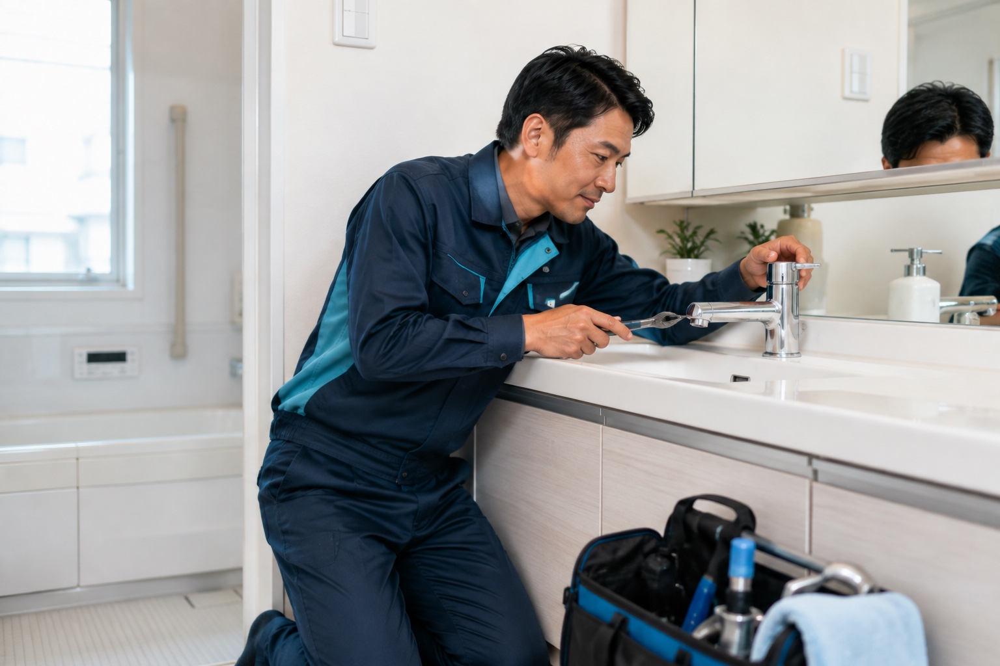

蛇口の水漏れ修理
5,500円〜
パッキンや接続部などを点検し、軽度の水漏れ修理を行います。
杉並区・中野区の水道修理
現地で状態を確認し、必要な作業・交換部品・料金をご説明します。内容をご確認いただく前に、勝手に作業を始めることはありません。
※ 架空サービスのポートフォリオです。

サービスと料金
パッキンや接続部などを点検し、軽度の水漏れ修理を行います。
紙類などの詰まり状態を確認し、便器を外さない範囲の除去作業から行います。
キッチン・洗面・浴室などの排水状態を確認し、必要な清掃を行います。
既存の水栓を確認し、交換可能な製品と商品代を作業前にご案内します。
表示料金はポートフォリオ用の架空設定です。実在するサービスではありません。
みず番の安心
状態確認後、必要な作業、交換する部品、料金をご案内します。説明していない作業や部品交換を勝手に追加しません。
杉並区・中野区を中心に訪問範囲を設定しています。広い地域を一律に受けるのではなく、杉並区在住の担当者が、近隣の道路や住宅地を前提に訪問する水道修理サービスです。
電話や相談で聞いた内容を、基本的にその担当者自身が確認して訪問します。受付と作業担当が分かれていないため、相談内容をもう一度最初から説明する手間を減らします。
作業事例

上記はすべて架空事例です。
ご相談から修理完了まで
水が漏れている場所、いつから起きているか、現在の状態をお知らせください。
蛇口、排水口、配管などを点検し、必要な修理を判断します。
修理内容、交換部品、料金をご案内します。ここで内容をご確認ください。
確認いただいた内容を作業し、最後に水漏れや排水状態を一緒に確認します。
よくあるトラブル
蛇口の先から漏れる、根元が濡れる、ハンドルを閉めても水が止まらないなどの状態を確認します。
水位が上がる、流れが戻る、タンクから漏れる、便器まわりの床が濡れるなどの症状を確認します。
水が引くのが遅い、逆流する、ゴボゴボ音がする、臭いがするなど、排水の状態を確認します。
レバーが固い、水栓が古い、交換できる製品を知りたいなど、既存水栓を確認してご案内します。
← 横にスワイプできます →
対応エリア
世田谷区・渋谷区の一部は、住所と訪問状況を確認した上で対応可否をご案内します。
全国対応ではなく、近隣地域を中心にした小さな水道修理サービスを想定しています。
担当者紹介
水道修理業務経験12年／杉並区在住／相談から完了確認まで担当
家の中へ入る仕事だからこそ、作業技術だけでなく、必要な作業と料金を分かりやすく説明することを大切にしています。
※ 架空の人物設定です。
FAQ
基本的に相談を受けた担当者本人が訪問する想定です。
症状や必要な部品によって変わります。現地確認後、作業前に必要な内容と料金をご案内します。
相談できます。状態を確認し、交換が必要な場合は理由と部品代をご説明します。
作業開始前であれば、見積もり内容を確認してから判断できます。
管理会社や大家への確認が必要な場合があります。
症状によって異なります。現地確認後に作業時間の目安をご案内します。
お問い合わせ
会社情報
本サイトはWeb制作ポートフォリオとして制作された架空サイトです。実在する事業者ではありません。